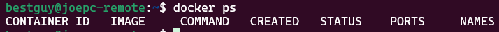
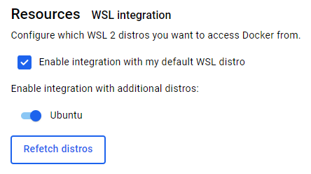

In WSL:
- Make sure you are able to run docker in WSL:
docker ps

- If not, install docker desktop and go to “Settings > Resources > WSL integration” and make sure that ‘Ubuntu’ and integration are checked:

- Make sure that our user is able to run docker without sudo:
sudo usermod -aG docker $USER
- Now you should be able to run ‘docker version’ without any permission errors:
- Install required packages:
sudo apt update && sudo apt install -y python3-pip python3-venv python3-docker
- Create and activate a python virtual environment:
python3 -m venv .venv && source .venv/bin/activate
In the virtual environment:
- Install required python packages:
pip install molecule molecule-docker yamllint ansible-lint
- Test docker installation and docker driver presence:
docker ps

molecule drivers
With this, you should have docker and molecule working correctly in your virtual environment, follow steps here to add molecule functionality to a collection.